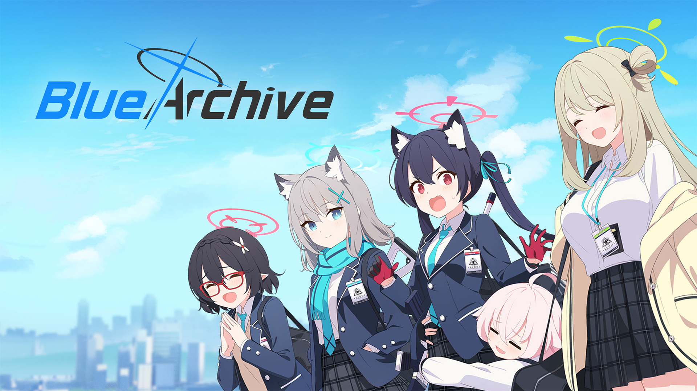
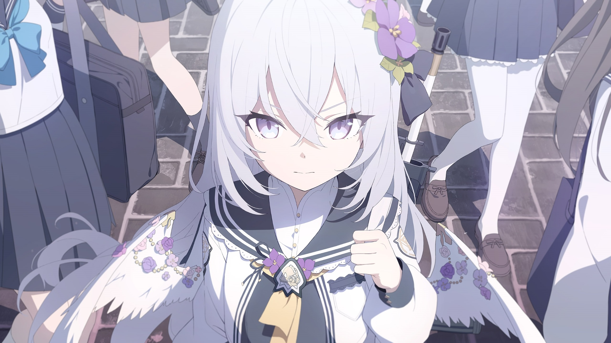
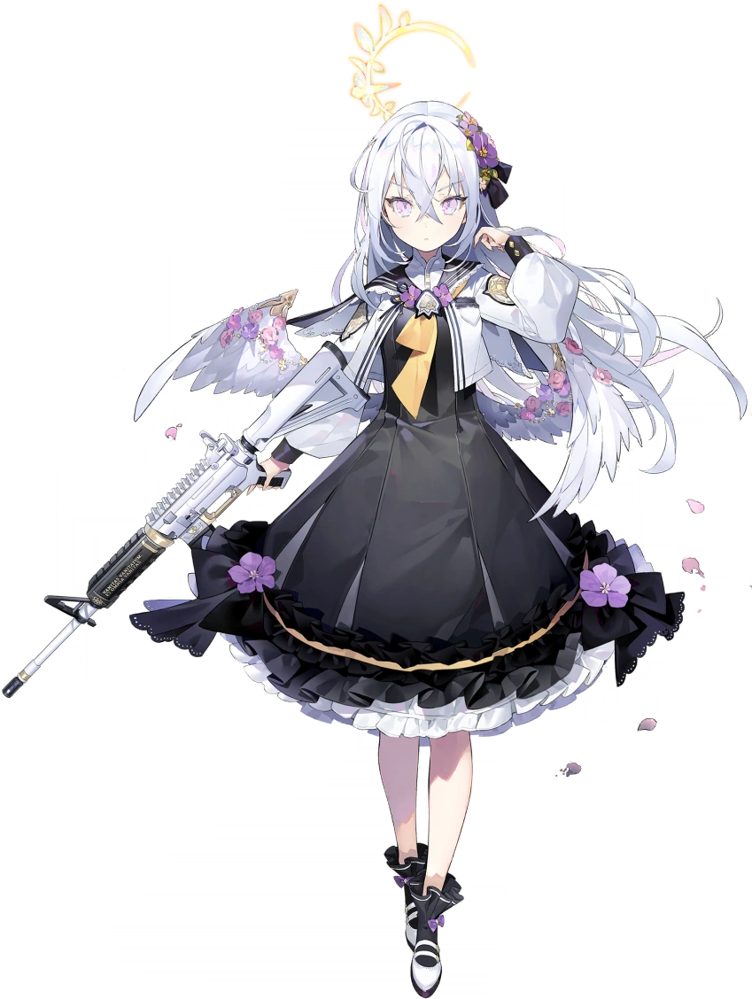
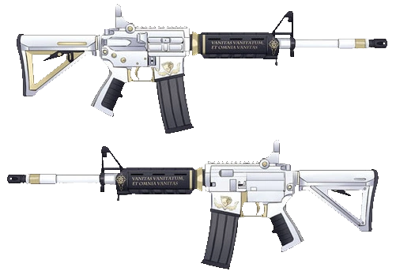
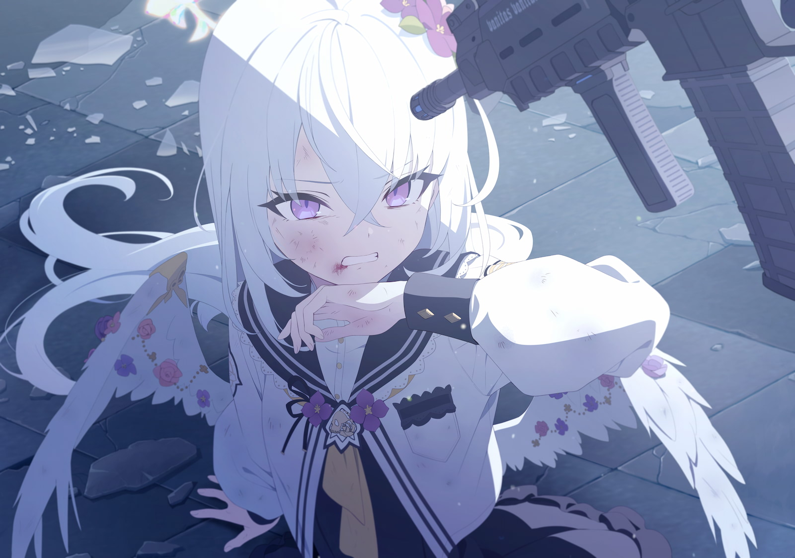

Tentang Blue Archive
Blue Rchive adalah sebuah RPG(roll play game) gacha game yang menceritakan tentang seorang guru/sensei(player) yang mendidik muridnya di dunia yang bernama Kivotos. Game ini dirilis pertama kali pada 4 Februari, 2021 di server jepang. Kemudian dirilis lagi untuk server global pada 8 November, 2021.
Populasi Kivotos mayoritas terdiri dari humanoid wanita dengan fitur mitologis dan kebinatangan, serta kemampuan berbicara bagi hewan dan robot. Sekolah-sekolah di Kivotos memiliki beragam budaya dan ideologi, seperti Sekolah Trinity yang mengadvokasi harmoni, dan Akademi Gehenna yang mengusung kebebasan dan kekacauan. Selain itu, terdapat sekolah-s sekunder yang terkenal, seperti Akademi Federal Red Winter yang identik dengan ras komunis.
Setiap sekolah memiliki struktur pemerintahan sendiri, dengan Dewan Siswa Akademi bertindak sebagai otoritas di setiap distrik. Tim keamanan di setiap distrik menangani masalah internal, dengan metode yang bervariasi sesuai dengan budaya sekolah. Sebagai Sensei, peran Anda bukan hanya sebagai guru, tetapi juga pembimbing bagi siswa-siswa, terlepas dari latar belakang mereka. Dengan pengetahuan taktis dan kebijaksanaan, Anda harus membimbing mereka melewati beragam tantangan, sambil menjalani pengalaman yang unik dalam prosesnya.
*Spoiler Alert
Kontent selamjutnya mengandung spoiler dari cerita utama vol. 3. Bagi anda yang niat bermain blue archive dan belum menyelesaikan main story vol. 3, saya sarankan anda untuk membaca ceritanya terlebih dahulu sebelum meneruskan membaca artikel ini. saya akan anggap bahwa semua yang membaca artikel dibawah sudah mengetahui akan adanya spoiler.
Tentang Shirasu Azusa
Shirasu Azusa adalah seorang murid dari sekolah Trinity. Ia dijuluki ratu es dari club make up work karena memiliki hati yang dingin sampai ke dalam pada awal memasuki sekolah trinity. Shirasu Azusa merupakn murid pindahan dari sekolah Arius Satelit yang merupakan pecahan dari faksi sekolah Trinity.
Karena nilai ulangannya berada di bawah kkm, akhirnya ia dimasukkan kedalam Club Make-Up Work(Supplementary Lessons Department). Disana ia bertemu dengan Ajitani Hifumi, Shimoe Koharu, dan Urawa, Hanako.
Setelah diperkenalkannya kepada momo and friends series oleh hifumi, Shirasu Azusa menjadi tertarik dengan keimutan-keimutan momo and friends. Iapun menjadi penggemar berat momo and friends.
Penampilan
Halo
Lingkaran cahaya(halo) Azusa secara tematis menyerupai anyaman pohon salam, digambarkan sebagai lingkaran kuning terbuka yang menyerupai bulan sabit dengan berbagai daun zaitun.
Seragam
Dia memiliki rambut panjang berwarna perak dengan berbagai aksesoris bunga ungu, dan pita hitam. Ia mengenakan jubah putih lengan panjang dengan logo Trinity kuning di lengan kanannya, logo Arius kuning di lengan kirinya, dan bros Arius emas berhiaskan bunga di bagian depan. Di bawah jubahnya, dia mengenakan kemeja
Senjata
Dia menggunakan senapan serbu M4A1 berwarna putih dengan pegangan dan moncong pistol berwarna hitam. Sedikit titik cat emas di sekitar senapan. Dilengkapi dengan Handguard Magpul MOE M-LOK hitam dan Stock Carbine MOE. Motto Arius "Vanitas Vanitatum, Et Omnia Vanitas" tercetak di handguardnya.
Kepribadian
Seorang individu yang dingin dari dalam, sebagian besar sifat acuh tak acuh Azusa berasal dari pelatihannya di bawah Arius dan dibesarkan sebagai senjata. Karena dedikasinya pada misi, dia tidak memiliki hobi atau minat apa pun dan tidak membuat usaha untuk berteman dengan teman sekelasnya di Departemen Pelajaran Tambahan. Pelatihan membuatnya sangat mahir dalam pertempuran, memiliki pengetahuan yang luas tentang cara membunuh murid-murid lain dengan menghancurkan cincin mereka dan menjalani gaya hidup yang sederhana, fokus pada misi dan studinya.
Melalui pengalamannya di Departemen Pelajaran Tambahan, dia belajar menikmati hidup dan menemukan tujuan dalam tindakannya serta mengembangkan persahabatan dengan Hifumi dan Sensei sebagai hasilnya. Namun, dia masih memiliki konflik emosional antara kesetiaannya terhadap Arius Squad dan kebutuhan untuk membunuh mereka untuk mencegah Trinity dan dalam tingkat yang lebih rendah Kivotos dari kehancuran.
Pendapatku
.png)
Shirasu Azusa adalah karakter yang imut. Rambutnya yang putih, kulitnya yang polos, membuatnya terlihat seperti putri salju. Dikombinasikan dengan keimutannya ketika memeluk boneka kesukaannya, membuatku ingin melindungi senyman bahagianya. Dalam hatiku aku berkata ”Ah… betapa indahnya senyumannya, angin kupeluk!, harus aku lindungi senyman berharga ini!, takkan kubiarkan seorangpun menghancurkan senyuman ini!”. Mengingat ia berasal dari sekolah Arius yang dilatih dengan keras untuk menjadi senjata, seakan membuat insting naluri ayah dalam diriku membara untuk melindungi Shirasu Azusa dari segala marabahaya.